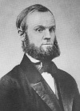

New York’taki Oneida’da ütopik bir dini grubun kurucusu olan John Humphrey Noyes (1811–1886), evlilik ve cinsellikle ilgili radikal öğretileriyle adını duyurmuştu. Diğer taraftan cemaatinin sahip olduğu iyimserlik, 19. yy Amerikan Hıristiyanlığı’nda önemli bir uyanış yaşanmasına da katkı sağladı.

Vermont’daki Brattleboro’da doğdu. Babası eyalet meclisi üyesiydi. Noyes, Darthmouth Koleji’ne gitti. Okuldan mezun olduktan sonra New Hampshire’da avukatlık yaptı. Vaiz Charles Grandison Finney (1792–1875) tarafından yapılan bir konuşmayı dinledikten sonra dini okula gitmeye karar verdi.
Yale İlahiyat Fakültesi’nde İncil okumaları yaptı. Özellikle Yuhanna İncili’ndeki bir pasaj onu çok etkilemişti. Bu pasaja dayanarak Hz. İsa’nın MS 70 yılında dönmüş olduğunu iddia etti. Bu iddia, Hz. İsa’nın gelişinin ardından başlayacak ve insanın mükemmelleşeceği bin yıllık sürecin hali hazırda başlamış olduğu anlamına geliyordu.
Noyes’in tezi yaygın Hıristiyan inançları ile çelişiyordu. 1834 yılında sapkınlıkla suçlanarak Yale’den uzaklaştırıldı. Ancak Mükemmelliyetçilik doktrini kendisine New York ve New England’da epey taraftar buldu. 1845 yılında Vermont’daki Putney’de ilk kutsal topluluğunu kurdu. 1848 yılında grubunu Oneida’ya taşıdı.
Noyes insanın mükemmel ve günahlarından arınmış olduğuna inanıyordu. Bu nedenle geleneksel seks kalıplarını reddetti. Cinsel ilişkinin kanunla kısıtlanması için hiçbir neden olmadığını düşünüyordu. 1846 yılında karısı Harriet’i grubun bir başka erkek üyesiyle takas ederek fikirlerini bizzat kendisi hayata geçirmiş oldu. Ancak bu nedenle zina suçlamasıyla tutuklandı.
Oneida daha ziyade grup evliliği savunusu ile tanınsa da aslında cemaati başarılı ve kendi kendine yetebilen ekonomik bir yapı haline gelmişti. Bavul ve iplik imalatı yapıyorlardı. Oneida gümüşçülüğü ile de ün salmıştı. Ortak çalışıyor, kazancı da ortak paylaşıyorlardı. Bu cemaat 19. yy Amerikası’nın birkaç başarılı ütopik topluluğundan biri haline gelmişti.
Noyes 1879 yılında reşit olmayan bir kadına tecavüz etmekle suçlanınca Kanada’ya gitti. yetmiş dört yaşında Ontario’da öldü. 1881 yılında Oneida topluluğu kendini resmen feshetti. Daha sonra, günümüzde de varlığını sürdüren “Oneida Gümüş Eşya Şirketi” olarak yeniden varlık göstermeye başladı.
Ek Bilgiler
1- Noyes’in kuzeni Rutherford B. Hayes (1822–1893), ABD’nin 19. başkanıydı.
2- Noyes’in kurallarına göre sadece erkekler doğum kontrolünden sorumluydu. Ölçülü davranarak hamileliği engellemeye çalışmaları gerekiyordu.
3- Oneida topluluğu sıkı bir vejetaryen diyete bağlıydı. Alkol ve sigara tüketmeleri yasaktı.